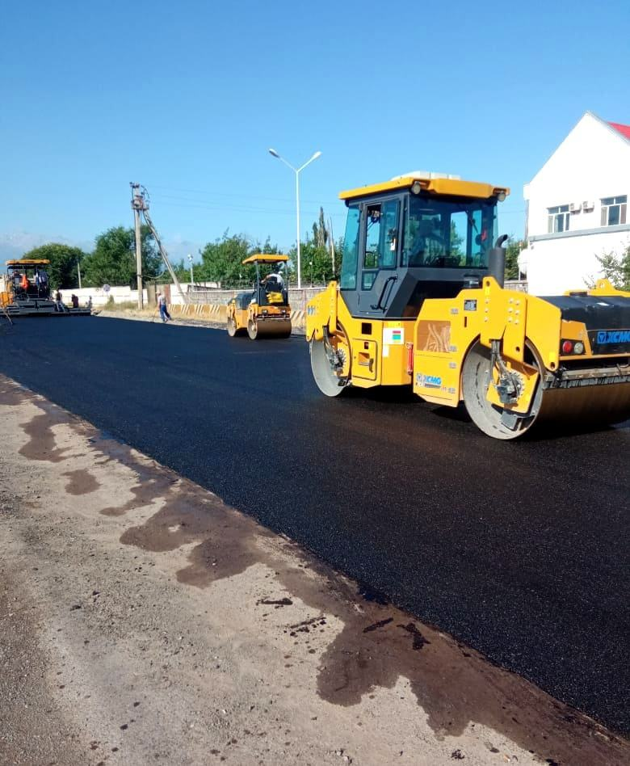
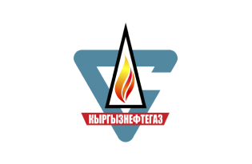
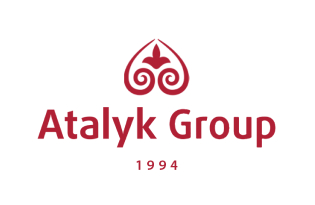
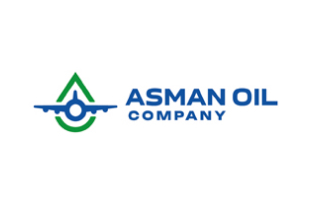
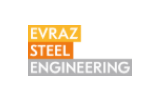
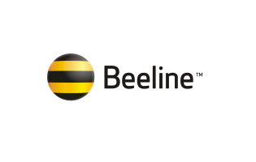
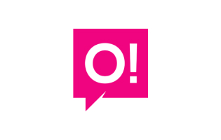
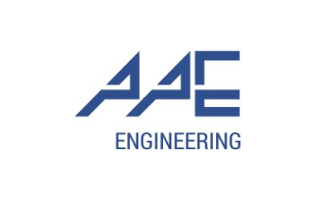
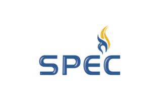

Промышленное строительство полного цикла — с 1952 года.
Металлоконструкции, резервуары, сборный железобетон, бескаркасные сооружения и дороги. Собственное производство, монтаж и ввод объекта в эксплуатацию.
Выберите свой объект.
Шесть направлений, одна производственная база. У каждого — параметры, объекты и форма запроса.

Склады и промышленные здания
Склады, распределительные центры, логистические хабы, АБК. Фундамент и колонны из сборного ж/б, покрытие — металлические фермы. Быстрее, дешевле и без огнезащиты ж/б колонн.

Металлоконструкции и резервуары
Изготовление и монтаж металлоконструкций промышленного назначения: промздания, резервуары для нефтепродуктов и воды, оборудование горнодобывающей отрасли — корпуса ЗИФ, сгустители, чаны выщелачивания, бункеры.

Ангары и хранилища
Ангары, склады холодного и тёплого исполнения, зернохранилища, овощехранилища, птицефабрики, цеха лёгкой промышленности, быстровозводимые общежития и АБК — с инженерными сетями под ключ.

Дороги и городская инфраструктура
Собственный карьер ПГС, асфальтобетонный завод, битумная база с ж/д путями и парк дорожной техники. В 1999 году — участок Кара-Балта – Тоо-Ашуу автодороги Бишкек–Ош совместно с Samsung.

Бетон и железобетонные изделия
Собственный бетонный завод и линии ЖБИ: сборные фундаменты и колонны, бордюры, изделия дорожного направления. Вся продукция сертифицирована Госстроем КР.

Проект и ввод в эксплуатацию
Земельный отвод, геология, согласование ИТУ и АПУ, проектирование по технологии BIM, экспертиза проекта, ввод здания в эксплуатацию. Одна ответственная сторона на весь цикл.
Объекты, которые работают.

Золоторудное месторождение «Джамгыр»
Металлоконструкции и строительно-монтажные работы на объекте золотодобычи.

ЗИФ — золотоизвлекательная фабрика

Кристаллизатор сахарного завода

Силосы

Завод по производству газоблока

Металлокаркас промздания
Изготовление и монтаж каркаса.

Резервуары
РГС и РВС для воды и нефтепродуктов — в том числе 2 × 400 м³ для питьевой воды («Профи НСК»).

Строительство дорог, Новопавловка

Бескаркасные сооружения

ул. Кожомбердиева

ул. Пальмиро Тольятти
Городская дорожная инфраструктура.

Строительство дорог
Двенадцать объектов последних лет. Год, локация и параметры заполняются по мере подтверждения компанией.
Разбор объекта: месторождение «Джамгыр»Мы не покупаем конструкции. Мы их делаем.
Металл, бетон, асфальт и ЖБИ — на собственных площадках в Кара-Балте. Контроль сроков и качества на каждом переделе.
КЖ, КМ, АР, ОВ, ВК · BIM · экспертиза
Металлоконструкции, сборный ж/б, ЖБИ, асфальтобетон
Свои бригады и техника, технический контроль
Исполнительная документация, сдача в эксплуатацию

45 000тонн
металло-
конструкций
Это примерно 6 Эйфелевых башен — сваренных, окрашенных и смонтированных в Кыргызстане силами одного подрядчика.
Одна ответственная сторона на весь цикл.
Заказчику не нужно сводить между собой проектировщика, завод, монтажников и дорожников.
- 01
Собственное производство и техника
Цеха металлоконструкций 3000 м², асфальтобетонный и бетонный заводы, линии ЖБИ, 70+ единиц техники. Сроки не зависят от субподрядчиков.
- 02
Полный цикл: проект → производство → монтаж → ввод
Проектирование в BIM, экспертиза, изготовление, монтаж своими бригадами, исполнительная документация и ввод в эксплуатацию.
- 03
Опыт технологически сложных объектов
Корпуса ЗИФ, сгустители и чаны выщелачивания, резервуары РВС до 10 000 м³, участок трассы Бишкек–Ош через Тоо-Ашуу. Продукция сертифицирована Госстроем КР.
С 1952 года История компании








«ЗАО «СУ-4» зарекомендовало себя ответственной, исполнительной компанией, обеспечивающей высокий уровень выполнения строительно-монтажных работ в требуемые сроки и отличного качества».
- Шаг 01Коммерческое предложение
Смета с описанием работ, распределением затрат и сроками
- Шаг 02Договор
Условия, правки, подписание — обязательства зафиксированы
- Шаг 03Реализация и сдача
Контроль на каждом этапе, исполнительная документация, ввод
Расскажите о задаче — вернёмся с предложением.
Металлоконструкции, резервуар, здание или дорога — опишите объект в двух словах. Отдел продаж отвечает в рабочее время.